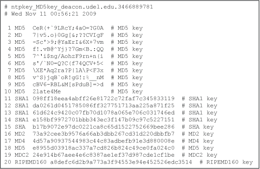

Our resident cryptographer; now you see him, now you don't.
Last update: 5-Feb-2016 09:13 UTC
This page describes the various cryptographic authentication provisions in NTPv4. Authentication support allows the NTP client to verify that servers are in fact known and trusted and not intruders intending accidentally or intentionally to masquerade as a legitimate server. A detailed discussion of the NTP multi-layer security model and vulnerability analysis is in the white paper NTP Security Analysis.
The NTPv3 specification (RFC-1305) defined an authentication scheme properly described as symmetric key cryptography. It used the Data Encryption Standard (DES) algorithm operating in cipher-block chaining (CBC) mode. Subsequently, this algorithm was replaced by the RSA Message Digest 5 (MD5) algorithm commonly called keyed-MD5. Either algorithm computes a message digest or one-way hash which can be used to verify the client has the same message digest as the server. The MD5 message digest algorithm is included in the distribution, so without further cryptographic support, the distribution can be freely exported.
If the OpenSSL cryptographic library is installed prior to building the distribution, all message digest algorithms included in the library may be used, including SHA and SHA1. However, if conformance to FIPS 140-2 is required, only a limited subset of these algorithms can be used. This library is available from http://www.openssl.org and can be installed using the procedures outlined in the Building and Installing the Distribution page. Once installed, the configure and build process automatically detects the library and links the library routines required.
In addition to the symmetric key algorithms, this distribution includes support for the Autokey public key algorithms and protocol specified in RFC-5906 "Network Time Protocol Version 4: Autokey Specification". This support is available only if the OpenSSL library has been installed and the --enable-autokey option is used when the distribution is built.
Public key cryptography is generally considered more secure than symmetric key cryptography, since the security is based on private and public values which are generated by each participant and where the private value is never revealed. Autokey uses X.509 public certificates, which can be produced by commercial services, the OpenSSL application program, or the ntp-keygen utility program in the NTP software distribution.
Note that according to US law, NTP binaries including OpenSSL library components, including the OpenSSL library itself, cannot be exported outside the US without license from the US Department of Commerce. Builders outside the US are advised to obtain the OpenSSL library directly from OpenSSL, which is outside the US, and build outside the US.
Authentication is configured separately for each association using the key or autokey option of the server configuration command, as described in the Server Options page. The ntp-keygen page describes the files required for the various authentication schemes. Further details are in the briefings, papers and reports at the NTP project page linked from www.ntp.org.
By default, the client sends non-authenticated packets and the server responds with non-authenticated packets. If the client sends authenticated packets, the server responds with authenticated packets if correct, or a crypto-NAK packet if not. In the case of unsolicited packets which might consume significant resources, such as broadcast or symmetric mode packets, authentication is required, unless overridden by a disable auth command. In the current climate of targeted broadcast or "letterbomb" attacks, defeating this requirement would be decidedly dangerous. In any case, the notrust flag, described on the Access Control Options page, can be used to disable access to all but correctly authenticated clients.
The original NTPv3 specification (RFC-1305), as well as the current NTPv4 specification (RFC-5905), allows any one of possibly 65,534 message digest keys (excluding zero), each distinguished by a 32-bit key ID, to authenticate an association. The servers and clients involved must agree on the key ID, key type and key to authenticate NTP packets.
The message digest is a cryptographic hash computed by an algorithm such as MD5 or SHA. When authentication is specified, a message authentication code (MAC) is appended to the NTP packet header. The MAC consists of a 32-bit key identifier (key ID) followed by a 128- or 160-bit message digest. The algorithm computes the digest as the hash of a 128- or 160- bit message digest key concatenated with the NTP packet header fields with the exception of the MAC. On transmit, the message digest is computed and inserted in the MAC. On receive, the message digest is computed and compared with the MAC. The packet is accepted only if the two MACs are identical. If a discrepancy is found by the client, the client ignores the packet, but raises an alarm. If this happens at the server, the server returns a special message called a crypto-NAK. Since the crypto-NAK is protected by the loopback test, an intruder cannot disrupt the protocol by sending a bogus crypto-NAK.
Keys and related information are specified in a keys file, which must be distributed and stored using secure means beyond the scope of the NTP protocol itself. Besides the keys used for ordinary NTP associations, additional keys can be used as passwords for the ntpq and ntpdc utility programs. Ordinarily, the ntp.keys file is generated by the ntp-keygen program, but it can be constructed and edited using an ordinary text editor.
Each line of the keys file consists of three or four fields: a key ID in the range 1 to 65,534, inclusive, a key type, a message digest key consisting of a printable ASCII string less than 40 characters or a 40-character hex digit string, and an optional comma-separated list of IPs that are allowed to serve time. If the OpenSSL library is installed, the key type can be any message digest algorithm supported by the library. If the OpenSSL library is not installed, the only permitted key type is MD5.

Figure 1. Typical Symmetric Key File
Figure 1 shows a typical keys file used by the reference implementation when the OpenSSL library is installed. In this figure, for key IDs in he range 1-10, the key is interpreted as a printable ASCII string. For key IDs in the range 11-20, the key is a 40-character hex digit string. The key is truncated or zero-filled internally to either 128 or 160 bits, depending on the key type. The line can be edited later or new lines can be added to change any field. The key can be change to a password, such as 2late4Me for key ID 10. Note that two or more keys files can be combined in any order as long as the key IDs are distinct.
When ntpd is started, it reads the keys file specified by the keys command and installs the keys in the key cache. However, individual keys must be activated with the trustedkey configuration command before use. This allows, for instance, the installation of possibly several batches of keys and then activating a key remotely using ntpq or ntpdc. The requestkey command selects the key ID used as the password for the ntpdc utility, while the controlkey command selects the key ID used as the password for the ntpq utility.
In addition to the above means, ntpd now supports Microsoft Windows MS-SNTP authentication using Active Directory services. This support was contributed by the Samba Team and is still in development. It is enabled using the mssntp flag of the restrict command described on the Access Control Options page. Note: Potential users should be aware that these services involve a TCP connection to another process that could potentially block, denying services to other users. Therefore, this flag should be used only for a dedicated server with no clients other than MS-SNTP.
See the Autokey Public-Key Authentication page.